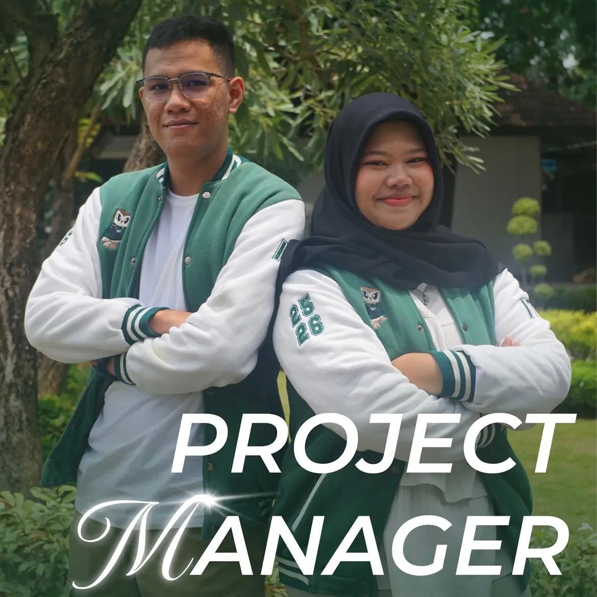

Bidang yang berfokus pada perencanaan, koordinasi, pelaksanaan, dan evaluasi proyek agar berjalan secara terarah, efektif, dan kolaboratif.
Mengelola alur kerja tim, membagi peran, menyusun target, dan memastikan proyek dapat diselesaikan sesuai tujuan.
Dokumentasi proyek, timeline kerja, pembagian tugas yang terstruktur, dan evaluasi progres tim secara berkala.
Project Manager, Product Manager, Team Lead, Business Analyst, dan Operations Coordinator.